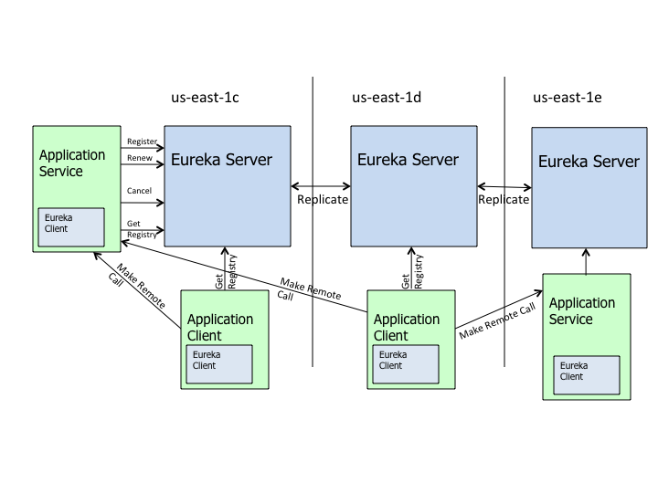

Eureka文档翻译（上）
什么是Eureka？
Eureka是一个基于REST（Representational State Transfer）的服务，主要用于AWS中实现负载均衡和中间件服务的故障转移。我们称这种服务为Eureka服务器，同时Eureka还附带了基于Java的客户端组件，可以简化与服务器的交互。Eureka客户端内置了负载均衡，用于实现基本的循环负载均衡。在Netflix，有更为复杂的基于权重的负载均衡，如流量、资源使用率、错误控制等权重区分。
什么时候需要Eureka？
在AWS中，由于其固有特性，服务器会经常上下线。不同于传统基于IP和HOST的负载均衡，在AWS上，负载均衡需要更为复杂的注册和注销服务策略。由于AWS并没有提供一个中间件的负载均衡器，Eureka恰好填补了这一空白。
Eureka与AWS ELB有什么区别？
AWS ELB（Elastic Load Balancer）是为暴露给用户的边缘服务器提供的网络流量的负载均衡方案。而Eureka提供了中间件负载均衡。（虽然理论上你也可以把AWS ELB用于中间件，但这会让他们都暴露在公开环境中，从而也失去了AWS的安全保护。）
同时，ELB是传统的基于代理的负载均衡解决方案，而Eureka提供的是实例、服务器、host层面的负载均衡。客户端实例能得到需要联系的服务器的所有信息，是好是坏取决于你从什么角度来看它。假如你需要的是一个基于用户会话状态的负载均衡，AWS已经有提供，而Eureka却没有提供开箱即用的方案。在Netflix，我们倾向于让服务是无状态的。这更有利于构建可扩展模型，而Eureka非常适合用于此。
Eureka负载均衡和基于代理的负载均衡的另一个重要不同在于，所有可用服务器的信息都会被缓存在客户端中，因此当应用从负载均衡掉线后具有恢复能力。通过花费很小的内存换来更好的弹性。
Eureka与Route 53有什么区别？
Route 53是一种命名服务，类似于Eureka为中间件提供的服务，但也尽是类似。作为DNS服务，也可以为非AWS提供服务。它还可以做基于延迟的AWS跨域路由。Eureka类似于一种内部DNS，它与公开的DNS服务无关。同时也是区域隔离的，它不知道其他AWS域的服务器信息，仅持有单个区域内的服务器信息。
虽然你可以通过Route 53注册你的服务器并依靠AWS安全组件来保护他们不被公开访问，但是你的中间件服务仍然暴露在公开环境中。另外，这还会有传统DNS负载均衡带来的缺陷：当服务器已经变得不可用甚至不存在时，流量还是会被路由到这些服务器上。（AWS中，服务器随时可能下线）
Netflix如何使用Eureka？
在Netflix，Eureka不仅仅作为中间件负载均衡的重要组件。
- 配合Asgard实现零宕机部署。当服务器出现问题时，可以做到新旧版本部署的无缝切换。（特别是当部署上百个实例时会需要很长的时间）
- 配合Cassandra运维，实现线上服务热插拔。
- 用于确定memcached缓存服务的节点列表。
- 用于传递其他各种服务的特定云数据或信息。
什么时候该用Eureka？
运行在AWS，不想通过AWS ELB注册或暴露你的中间件服务。你可能在找一个简单的循环负载均衡或可定制的负载均衡方案。你不需要保持会话状态或从memcached中加载会话数据。更重要的是，如果你的架构符合基于客户端负载均衡的模型，那么Eureka是你最合适的选择。
client与Server是如何通信的？
你可以选择任意的通信方式。Eureka帮你寻找你需要的服务的信息，并没有对通信协议或通信方式做任何限制。例如，你可以使用Eureka获取目标服务器的地址，同时使用thrif、http或任何一种RPC方式。
应用架构

上图的架构描述了Eureka在Netflix是如何部署的，这也是Eureka的典型用法。在每个域内至少有一个Eureka集群，它只知道该域内的实例，每个分区至少有一台Eureka服务器用于处理分区内的故障。
- region：域
- zone：分区
服务会向Eureka注册，并每隔30s发送一次心跳。如果连续90s没有心跳，服务器就会被注销。服务的注册信息和心跳状态会被复制到Eureka集群中的每一个节点上。从任何一个节点上来的客户端都可以找到对应的服务并发起远程调用。
非Java服务和客户端
对于非Java的服务，你可以选择用相应的语言来实现Eureka客户端部分，或者运行一个内嵌了Eureka客户端的独立Java程序来实现注册和心跳。Eureka客户端的所有操作接口都有对应的REST接口暴露出来，非Java客户端可以通过REST接口来查询服务注册信息。
可配置
Eureka可以让你的服务集群实现节点的热插拔。可以动态调整配置，如超时时间或者线程池配置等。Eureka使用archaius作为配置中心实现，你也可以自己实现。
弹性
作为AWS的服务，考虑服务弹性是必不可少的。Eureka提供客户端和服务端内建的弹性能力。
Eureka客户端被设计成可以处理当一个或多个Eureka节点宕机的情况。由于客户端会缓存所有的注册信息，因此就算所有Eureka节点全部宕机，依然可以正常工作。
Eureka服务端同样有能力应对Eureka节点宕机的情况。即使当服务端与客户端出现网络中断的情况，服务端依然可以通过内置的恢复能力防止大规模的中断。
分区部署
在多个AWS区域部署Eureka是一个相当简单的任务，不同区域的Eureka集群之间并不需要彼此通信。
监控
Eureka使用servo作为监控服务，实现客户端服务端信息监控，异常报警等。数据通过JMX暴露出来，并可以导出到Amazon Cloud Watch。
配置Eureka
Eureka的使用有两部分组成——Eureka Client和Eureka Server。采用Eureka的架构通常会包含两种应用：
- 应用客户端：通过Eureka Client向服务端发起请求。
- 应用服务端：接收客户端请求并返回。
包含了如下三个部分：
- Eureka Server
- 应用客户端用的Eureka Client
- 应用服务端用的Eureka Client
Eureka同时支持AWS和非AWS环境。
如果是AWS的环境，你需要在java参数中增加-Deureka.datacenter=cloud，用于通知Eureka初始化特定的AWS信息。
配置Eureka Client
必要条件
- JDK1.8+
可以通过以下方式获得Eureka Client（尽量使用最新版本）。
- 通过这个url下载Eureka Client：http://search.maven.org/#search%7Cga%7C1%7Ceureka-client
- 通过pom文件添加依赖获得Eureka Client：
|
|
这里有详细的Client构建说明
配置
配置Eureka Client最简单的方式是使用property文件。Eureka Client会默认搜索classpath中的eureka-client.properties文件，然后进一步搜索指定环境中的指定配置文件。环境通常分为test和prod两种，通过java参数-Deureka.environment来指定，如-Deureka.environment=test。因此client也会搜索eureka-client-{test,prod}.properties文件。
这里有一些默认的配置文件实例。你可以把他们复制到自己的工程中并改成自己需要的。如果你想要改变文件名，你可以用java参数来指定配置文件名：-Deureka.client.props=config-name。
配置文件中必须包含如下属性：
- Application Name (eureka.name)
- Application Port (eureka.port)
- Virtual HostName (eureka.vipAddress)
- Eureka Service Urls (eureka.serviceUrls)
更多高级配置，可以参考下面的两个配置类。
https://github.com/Netflix/eureka/blob/master/eureka-client/src/main/java/com/netflix/appinfo/EurekaInstanceConfig.java
https://github.com/Netflix/eureka/blob/master/eureka-client/src/main/java/com/netflix/discovery/EurekaClientConfig.java
配置Eureka Server
必要条件
- JDK 1.8+
- Tomcat6.0+
可以通过以下方式获得Eureka Server
- 通过源码编译构建得到war文件
- 通过这个url下载war文件：http://search.maven.org/#search%7Cga%7C1%7Ceureka-server
配置
Eureka Server配置分为两部分
- 上面说的Eureka Client配置
- Eureka Server配置
最简单的配置方式是和Eureka Client一样采用property文件配置。首先，根据上述内容配置好服务端的Eureka Client。Eureka Server自身会启动一个Eureka Client用于寻找其他Eureka Server。因此，你需要像给其他应用的Eureka Client配置一样，给Eureka Server配置好自身的Eureka Client。Eureka Server会根据这个配置来寻找其他具有一样eureka.name属性的Eureka Server。
配置好Eureka Client部分后，如果运行在AWS的，还需要配置Eureka Server部分。Eureka Server默认搜索classpath下的eureka-server.properties文件。然后进一步搜索指定环境中的指定配置文件。环境通常分为test和prod两种，通过java参数-Deureka.environment来指定，如-Deureka.environment=test。因此Eureka Server也会搜索eureka-server-{test,prod}.properties文件。
配置本地开发环境
当在本地开发环境中运行Eureka时，通常需要等待3分钟左右才能完全启动。这是由于Eureka Server默认行为：当搜索不到其他可用节点时会不停的重试。可以通过下面的参数配置来修改这个等待时间：eureka.numberRegistrySyncRetries=0。
配置AWS
运行在AWS环境的情况下，需要更多额外的配置，参考这里。其他Server的高级可用配置参考这里
如果你是自己构建war文件，可以直接编辑eureka-server/conf目录中的配置文件，构建过程会把配置文件放到WEB-INF/classes目录。
如果你是下载的war文件，可以直接修改WEB-INF/classes目录中的配置文件。
尝试运行demo，可以有助于更好的理解。
Client/Server版本兼容性
Eureka使用semantic versioning，会保持小版本的Server/Client之间兼容（例如1.x版本的Client和Server之间协议是兼容的）。通常，Server版本大于Client版本总是安全的。
构建
- 安装git
获取Eureka源码
1git clone https://github.com/Netflix/eureka.git运行下面命令构建Eureka Server
12cd eureka./gradlew clean build得到如下结果
- Eureka Server war包 (./eureka-server/build/libs/eureka-server-XXX.war )
- Eureka Client jar包(./eureka-client/build/libs/eureka-client-XXX.jar )
- 依赖包 (./eureka-server/testlibs/) (如果不适用maven类似的依赖机制，可以直接使用这些包)
关于Demo
Demo程序包含了运行Eureka所需要的所有配置，构建和运行能力。
- Eureka Server
- Application Server
- Application Client
Demo会帮你设置一个Eureka Server的监听端口，同时设置一个处理请求的Application Server和一个发送请求的Application Client。
Application Service会注册到Eureka Server，Application client可以从Eureka Server找到它们并发送请求。Client和Server完成消息互通后优雅的退出。
关于Demo Server
Demo Server被配置成便于demo使用，而非适合正式产品使用。理解如果正确的配置Eureka Server（The server configurations to understand how to properly configure the eureka servers）。
Eureka Server配置
- 需要的话，在eureka-server/conf/目录中，修改eureka-client.properties和eureka-client-test.properties。（对于demo来说，通常不需要修改eureka-server.properties，除非你需要更多高级配置）
- 构建应用（同时会构建所有运行demo所需要的库）
- 部署war包到你的tomcat中
- 启动tomcat，通过
http://localhost:8080/eureka查看信息。Eureka Client会在30s内注册上来并显示此处。
Application Service的Eureka Client配置
- 需要的话，在eureka-examples/conf目录中，修改sample-eureka-service.properties。
Application Client的Eureka Client配置
- 需要的话，在eureka-examples/conf目录中，修改sample-eureka-client.properties。
运行Demo
参考Demo的readmehttps://github.com/Netflix/eureka/tree/master/eureka-examples
部署
在AWS环境，实例会频繁的上线下线。这就意味着你不能通过正常的host或ip来定位Eureka Server，而Eureka Server需要识别定位那些不断变换hostname的服务，所以你要为Eureka Server提供一套标准的可识别地址。
这时候就需要AWS EC2的弹性IP（Elastic IP）了。如果你没听说过弹性地址，那么请先看这里
第一步，先为每台Eureka Server获取一个Elastic IP。你需要为集群中的每个Server获取一个Elastic IP。当你给Eureka Server配置好Elastic IP列表之后，Eureka Server会自己处理寻找没被占用的IP，并在启动时绑定该IP。
通常每个AWS域中的每个Eureka集群会有一个ASG，每个实例都使用一样的配置启动。这意味着，每个分区内必须要有一个冗余Eureka Server实例处理故障。一旦有一个实例被挂掉，ASG就会从空闲区域中启动一个新的Eureka Server实例，并从该区域内选取一个空闲Elastic IP绑定。对于正在访问Eureka Server的客户端来说，整个过程是透明的。就和正常的Eureka Client连接失败后转移到其他服务器，当服务器恢复后会自动重连一样。
根据不同的弹性需求，有两种不同的Elastic IP配置方式。在Netflix，为了做到全透明的增加新分区或新Eureka Server节点，我们采用DNS的方式来分配EIPs，做到对client和server端都可以热部署。还有个更简单的方式是配置在Eureka的配置文件中，这样做的缺点是，这些配置需要被分发到集群（大约1000个实例）中的每个实例。增加移除分区的操作肯定会变非常麻烦，因为不是给每个client下发新部署的配置。
通过配置文件配置EIPs
首先需要为Eureka Server配置每个域中的所有有效分区。配置内容在eureka-client.properties(或eureka-client-test.properties，或eureka-client-prod.properties)
下面的例子中，一个us-east-1域指定了三个有效分区：us-east-1c,us-east-1d, us-east-1e。
|
|
下一步为每个分区配置Eureka监听地址，一个分区内的多个Eureka Server可以用逗号隔开。
|
|
服务端和客户端的Eureka Client也有同样的配置。
通过DNS配置EIPs
如果你需要更高的灵活性，那就需要采用DNS的配置方式。
首先为每个域配置一个DNS name用于解析可用分区列表。 由于一个DNS name只有一个CNAME，我们用TXT records作为DNS name列表。
下面是一个DNS TXT record例子，在DNS server上列出了一个分区中的有效DNS name。
|
|
接着可以像下面一样为每个分区定义TXT record（如果一个分区有多个hostname，用逗号隔开）
|
|
最后在Eureka Server和Eureka Client的配置中增加如下配置。
|
|
在Netflix，我们用DNS的配置方式做到动态增加删除Eureka Server节点，并在几分钟内完成对几千个客户端的同步。
通过Service Urls设置EIPs
那么，为什么想要给Server分配EIPs时需要定义URLs呢？为了保证AWS的安全机制，任意两个实例之间的通信需要通过公共的hostname。Eureka Server之间使用这些URL进行通信。每个URL中包含了有EIP（552.627.568.170）衍生的公共hostname（ec2-552-627-568-170.compute-1.amazonaws.com）
Eureka server启动时会先找到一个分区推出的EIP，然后再从该分区中再找到一个空闲的EIP绑定启动。
Eureka是如果找到空闲EIP的？它通过Eureka Client找到集群中的其他实例，并查看他们绑定的IP，然后从中挑选未被绑定的IP。它优先使用同一个分区内的EIP，这样可以让该分区内的其他Eureka Client与之通信。如果Eureka Server找不到该分区内的空闲EIP，才会去尝试其他分区。如果所有的EIP都已经被占用，那么Eureka Server启动后会一直等待空闲EIP，并每个5分钟重试一次。
同样的，Eureka Client会优先寻找同一分区内的Eureka Server，找不到的情况下才去尝试其他分区。
Eureka故障切换
当Eureka Client得到Eureka Server的列表后，发生故障时，会自动切换到集群中的其他节点。让我们通过下面的配置来分析这个过程是如何工作的。
|
|
我们定义了三个分区 (us-east-1c, us-east-1d and us-east1e) 每个分区只有一个EIP。 比如eureka server在us-east-1c分区http://ec2-552-627-568-165.compute-1.amazonaws.com:7001/eureka/v2/运行失败, 所有eureka clients自动切换到下一个分区http://ec2-552-627-568-170.compute-1.amazonaws.com:7001/eureka/v2/。如果还是失败，继续尝试列表中的下一个分区。
当宕机的Eureka Server重新恢复，Eureka Client会重新连接到该分区内的Eureka Server。
Eureka的AWS特定配置
在AWS上，需要增加java参数-Deureka.datacenter=cloud，让Eureka Server/Client知道针对AWS环境初始化。
Eureka Server需要运行在AWS的EC2的访问权限。两种方式：使用默认的配置，它会在EC2实例中使用InstanceProfileCredentials。或者明确在配置文件中配置好AWS的accessId和secretKey：
|
|
AWS访问策略
Eureka会尝试查询ASG的相关信息，以确保实例启动时处于OUT_OF_SERVICE或UP状态，而这取决于自动伸缩组配置项中addToLoadbalancer的值。属于哪个ASG的属性由Eureka Client配置中的eureka.asgName指定。
|
|
Eureka server需要访问云端的ASG信息和IP绑定信息。因此AWS策略要配置成允许上述访问，下面是一个访问策略的例子。
|
|
Client/Server互通
使用Eureka Server的第一步是先初始化Eureka Client。如果在AWS上，初始化方法如下：
版本1.1.153，EurekaModule类引入了governator/guice来使用eureka-client。governated例子。
1.1.153之前的版本，可以这样初始化Eureka Client：
|
|
如果在其他环境运行Eureka，初始化方法如下：
|
|
Eureka Client会自动寻找eureka-client.properties配置文件进行初始化。
关于无状态实例
默认情况下，Eureka Client启动后会处于STARTING状态，这样可以让实例在正式提供服务之前进行其他的初始化工作。然后再通过下面的方法把状态改为UP，让实例正式上线提供服务。
|
|
应用也可以注册心跳检测的回调，用于把实例状态改为DOWN。
在Netflix，我们也会使用OUT_OF_SERVICE状态，主要用于从线上撤下实例。当新部署版本有问题时可以很容易的回滚。大多数应用会为新的版本创建新的ASG，然后把线上流量导到新的ASG。出现问题的情况下，回滚只需要把ASG中的所有实例状态改为OUT_OF_SERVICE来切断流量。
Eureka Client运行
Eureka Client在AWS上会先尝试与本同一分区的Eureka Server协商所有操作，失败则尝试其他分区。
Application Client可以通过Eureka Client返回的信息实现负载均衡，如下：
|
|
如果简单的轮询负载均衡不能满足需求，你可以从这里提供的选择中封装自己的负载均衡。在AWS环境，需要实现失败重试并保持较低的超时时间，因为有一种情况是，Eureka Server可能返回了已经无效或不存在的实例。
需要注意是，为了服务器的正常的通信，Eureka Client会清理掉闲置30s以上的http连接。因为AWS不允许在一个空闲了几分钟之后的连接上传输内容。
Eureka Client与Server的交互如下：
注册
Eureka Client会把实例的相关信息注册到Eureka Server。在AWS上，这些信息包含了访问URL，如[http://169.254.169.254/latest/metadata][]这样。Client会在第一次心跳时进行注册。
心跳
Eureka Client需要每隔30秒发送一次心跳来更新状态，告知Eureka Server自己还活着。如果Server连续超过90s没有收到心跳，会将对应的实例从注册表中移除。尽量不要去修改心跳时间间隔，因为Server依靠心跳来确定与Client之间的通信是否有问题。
获取注册表
Eureka Client从Server获取注册信息并缓存在本地，然后应该根据这些注册信息找到需要的服务。注册信息会周期性（每30s）做增量更新。由于增量信息本身会在Server缓存较长时间（大约3分钟），因此可能会返回相同的增量信息。Eureka Client会自动处理这种重复信息。
拿到增量信息后，Eureka Client会比较服务器返回的信息和实例数量的一致性，如果信息不匹配，整个注册表信息都会再重新获取一次。Eureka Server会缓存所有压缩过和非压缩的增量信息、整个注册表信息，以及每个应用的信息。信息格式支持JSON/XML等格式。Eureka Client获得的信息是经过Apache jersey压缩的json格式。
注销
Eureka Client关闭时发送一个注销请求给Eureka Server。通过从Server的注册表中移除该实例，从而有效的把实例从线上撤下。
应用关闭时应该确保调用如下方法：
|
|
时延
所有从Eureka Client发起的操作需要一段时间才能反映到所有Eureka Server和其他Client。因为Eureka Server的缓存是每个一段时间刷新一次，Client也是每隔一段时间获取一次注册信息。所以同步到所有Server和Client可能需要花费2分钟。
通信协议
默认情况下，Eureka使用Jersey和XStream配合json作为Server与Client之间的通信协议。你也可以选择实现自己的协议来代替。